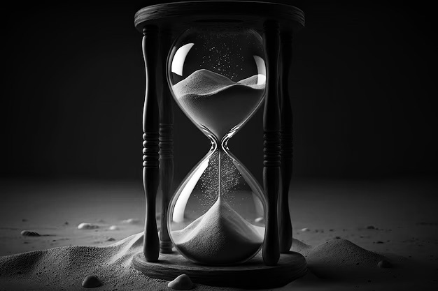

The Calendar
Artifacts from the Paleolithic suggest that the moon was used to reckon time as early as 6,000 years ago. Lunar calendars were among the first to appear, with years of either 12 or 13 lunar months (either 354 or 384 days). Without intercalation to add days or months to some years, seasons quickly drift in a calendar based solely on twelve lunar months. Lunisolar calendars have a thirteenth month added to some years to make up for the difference between a full year (now known to be about 365.24 days) and a year of just twelve lunar months. The numbers twelve and thirteen came to feature prominently in many cultures, at least partly due to this relationship of months to years. Other early forms of calendars originated in Mesoamerica, particularly in ancient Mayan civilization. These calendars were religiously and astronomically based, with 18 months in a year and 20 days in a month, plus five epagomenal days at the end of the year.
The Sundial

A sundial uses a gnomon to cast a shadow on a set of markings calibrated to the hour. The position of the shadow marks the hour in local time. The idea to separate the day into smaller parts is credited to Egyptians because of their sundials, which operated on a duodecimal system. The importance of the number 12 is due to the number of lunar cycles in a year and the number of stars used to count the passage of night.
The Hourglass
The hourglass uses the flow of sand to measure the flow of time. They were used in navigation. Ferdinand Magellan used 18 glasses on each ship for his circumnavigation of the globe (1522).
The Modern Clock
Clocks can range from watches to more exotic varieties such as the Clock of the Long Now. They can be driven by a variety of means, including gravity, springs, and various forms of electrical power, and regulated by a variety of means such as a pendulum. Alarm clocks first appeared in ancient Greece around 250 BC with a water clock that would set off a whistle. This idea was later mechanized by Levi Hutchins and Seth E. Thomas. A chronometer is a portable timekeeper that meets certain precision standards. Initially, the term was used to refer to the marine chronometer, a timepiece used to determine longitude by means of celestial navigation, a precision first achieved by John Harrison. More recently, the term has also been applied to the chronometer watch, a watch that meets precision standards set by the Swiss agency COSC.